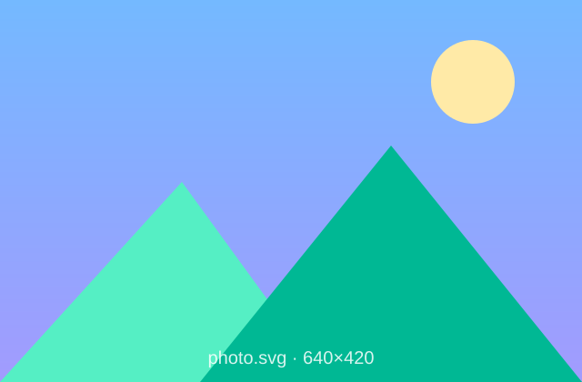

1Trạng thái & Transition
Thêm tiền tố trạng thái để đổi style theo tương tác: hover: (rê chuột), focus: (đang chọn), active: (đang nhấn). Muốn đổi mượt thay vì "nhảy" đột ngột, thêm nhóm class transition.
| Class | Tác dụng |
|---|---|
transition | Chuyển động chung (mọi thuộc tính phổ biến) |
transition-colors | Chỉ đổi màu (nền, chữ, viền) |
transition-transform | Chỉ đổi transform (scale, rotate…) |
transition-all | Mọi thuộc tính đổi được |
duration-300 | Thời lượng 300ms (mặc định 150ms) |
ease-linear/-in/-out/-in-out | Kiểu gia tốc (mặc định cubic-bezier(.4,0,.2,1)) |
delay-200 | Chờ 200ms rồi mới chạy |
<!-- đổi màu nền mượt 300ms khi hover -->
<button class="bg-blue-500 text-white font-bold py-2 px-4 rounded
transition-colors duration-300 hover:bg-red-500">
Hover me!
</button>Phân rã class
transition-colors chỉ chuyển động màu ·
duration-300 kéo dài 300ms ·
hover:bg-red-500 nền đỏ khi rê chuột. Bỏ transition thì màu vẫn đổi nhưng "nhảy" tức thì.
2Transform — phóng to, xoay, dời, nghiêng
Nhóm transform biến đổi hình học phần tử mà không ảnh hưởng bố cục xung quanh: scale-* phóng to/thu nhỏ, rotate-* xoay, translate-x/y-* dời, skew-* nghiêng, origin-* đổi tâm biến đổi.
| Class | Ý nghĩa |
|---|---|
scale-50 / 100 / 110 / 125 | Tỉ lệ 50% → 125% |
rotate-45 / -rotate-12 | Xoay ±độ |
translate-x-4 / translate-y-2 | Dời ngang/dọc |
skew-6 | Nghiêng 6° |
origin-center / origin-top-left | Tâm biến đổi |
rotate-x-* / rotate-y-* | Xoay 3D + perspective-normal, transform-3d, backface-hidden |
transform-gpu | Ép dùng GPU → chuyển động mượt hơn |


<!-- phóng to 125% mượt 300ms khi hover -->
<img src="../assets/rose.svg"
class="w-32 transition-transform duration-300 hover:scale-125">Tự kiểm tra
Rê chuột vào bông hồng → ảnh phóng to 125% một cách mượt trong 300ms. Dời chuột ra, ảnh trở về kích thước gốc cũng mượt. Muốn êm hơn nữa trên phần tử lớn, thêm transform-gpu.
3Opacity · Shadow · Effects
opacity-0/25/50/75/100 chỉnh độ trong suốt. shadow-* đổ bóng khối; thêm màu bóng shadow-cyan-500/50, bóng trong inset-shadow-sm, bóng chữ text-shadow-sm/md/lg (v4.1). Trộn màu lớp bằng mix-blend-* / bg-blend-*.
<!-- bóng thường → bóng đậm hơn -->
<div class="shadow-sm"> ... </div>
<div class="shadow-2xl"> ... </div>
<!-- bóng màu · bóng trong · bóng chữ (v4.1) -->
<div class="shadow-lg shadow-cyan-500/50 inset-shadow-sm"> ... </div>
<h3 class="text-shadow-lg"> Tiêu đề </h3>Lưu ý — v4 đổi tên thang đo
Nhiều class "cỡ mặc định" của v3 bị dời một bậc trong v4:
shadow(v3) →shadow-sm; nhỏ nhất giờ làshadow-2xs. Bóng trongshadow-inner→inset-shadow-sm.- Tương tự:
rounded→rounded-sm,blur→blur-sm.
4Animation có sẵn
Tailwind cho 4 animation dựng sẵn dùng ngay không cần @keyframes. Cần hiệu ứng riêng thì tự khai báo bằng biến --animate-* kèm @keyframes trong khối @theme.
animate-spin
loading
animate-ping
lan toả
animate-pulse
skeleton
animate-bounce
nảy
animate-wiggle
tự tạo
<!-- 4 animation dựng sẵn -->
<div class="animate-spin"></div> <!-- xoay/loading -->
<div class="animate-ping"></div> <!-- lan toả -->
<div class="animate-pulse"></div> <!-- skeleton -->
<div class="animate-bounce"></div> <!-- nảy -->
/* tự tạo animation: khai báo trong @theme */
@theme {
--animate-wiggle: wiggle 1s ease-in-out infinite;
@keyframes wiggle {
0%, 100% { transform: rotate(-6deg); }
50% { transform: rotate(6deg); }
}
}Chuẩn nghề
Mẫu thẻ sản phẩm thường dùng transition-transform hover:scale-105 — nhấc nhẹ thẻ khi rê chuột, tinh tế mà không "giật". Kết hợp thêm hover:shadow-lg để nổi khối.
5Filter & Backdrop
Filter xử lý hình ảnh trực tiếp trên phần tử: làm mờ, chỉnh sáng/tương phản, đổi màu. Backdrop áp filter lên nền phía sau phần tử (kính mờ). Rất hợp cho thư viện ảnh, hero, lớp phủ.
| Class | Tác dụng |
|---|---|
blur-xs … blur-3xl | Làm mờ (v4: blur → blur-sm) |
brightness-110 · contrast-125 | Chỉnh độ sáng / tương phản |
grayscale · sepia · invert | Xám · nâu cổ điển · đảo màu |
hue-rotate-90 · saturate-150 | Xoay tông màu · tăng độ bão hoà |
drop-shadow-lg | Bóng theo hình (có màu: drop-shadow-cyan-500/50, v4.1) |
backdrop-blur-md · backdrop-brightness-110 | Filter cho nền phía sau (kính mờ) |
filter-none · backdrop-filter-none | Tắt filter / backdrop-filter |
grayscale hover:grayscale-0blur-sm<!-- xám mặc định, hiện màu khi hover (v4: filter TỰ kích hoạt) -->
<img src="../assets/rose.svg"
class="w-64 grayscale hover:grayscale-0 transition">
<!-- làm mờ ảnh (v4: blur → blur-sm) -->
<img src="../assets/photo.svg" class="w-64 blur-sm">Lưu ý — v4: filter tự kích hoạt
v3 phải thêm class filter (hoặc backdrop-filter) để "bật" rồi mới ghi blur-sm. v4 bỏ bước này: chỉ cần ghi thẳng blur-sm, grayscale, brightness-110… là filter tự áp dụng. Cần tắt thì dùng filter-none / backdrop-filter-none.
Mẹo dùng thực tế
grayscale hover:grayscale-0 cho thư viện ảnh (ảnh xám, hiện màu khi rê chuột) ·
blur + lớp phủ tối cho hero để chữ nổi trên ảnh nền.